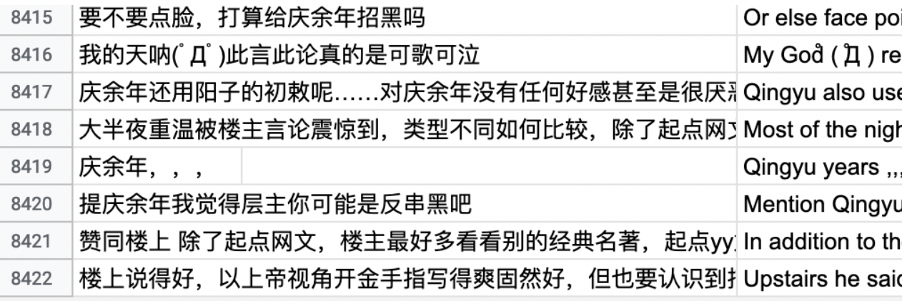

I talked about how I have the idea to work on this project, and I will talk about how I get the data, how to analyze them and little progress I got this week.
After going through precedents, I began to organize my project. I wanted to analyze both book series and anime. But the original book series are Japanese, I can’t understand. And the Chinese version book series I didn’t find relative packages in R (a programming language, widely used among statisticians and data miners for developing statistical software and data analysis) to analyze them. Luckily, I found fan translation, English version book series of The Twelve Kingdoms on the website Eugene Woodbury.
For the anime, I know an interesting Chinese video-sharing website called Bilibili. Bilibili is like Chinese YouTube, which is based in Shanghai, themed around animation, comic, and game (ACG). It has a special feature—a real-time commentary subtitle system that displays user comments as streams of moving subtitles overlaid on the video playback screen. Such subtitles are simultaneously broadcast to all viewers in real-time, creating a chat room experience in which users feel like watching and playing together with others.

On-time bullet screen comments fly from right to left on the screen.
The Twelve Kingdoms has over 4,437,000 views on Bilibili. Over 106,000 screen bullets will stay with you when you watch the anime. Due to the unique feature on Bilibili, I can drag and analyze the data of on-time bullet comments and bottom comments from the anime on the website. Maybe I can even compare the difference between the comments from the website and the findings of the text analysis of the book series. Well, the ideal is plump, the reality is very skinny. Quickly, I met tons of troubles.

The data I scraped from Bilibili.